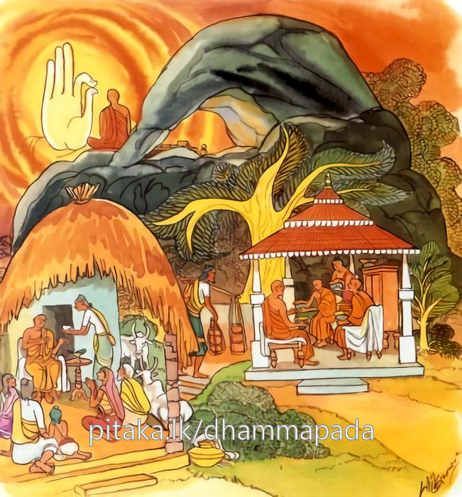

26-21 පබ්භාරවාසි තිස්ස තෙරුන් පිළිබඳ වූ කථා පුවත
මෙම කතාව සද්ධර්ම සාගරයෙන් ද කියවන්න.
අසංසට්ඨං ගහට්ඨෙහි අනාගාරෙහි චූභයං
අනොකසාරිං අප්පිච්ඡං තමහං බ්රූමි බ්රාහ්මණං.
ගිහියන් ද පැවිද්දන් ද යන දෙ පිරිස සමග සංසර්ග රහිත වූ (තෘෂ්ණාසඞ්ඛ්යාත) ගිහි හැසිරීමෙන් බැහැර වූ අල්පෙච්ඡ වූ මෙබඳු අශෛක්ෂ පුද්ගලයා බ්රාහ්මණ යැ යී මම් කියමි.

"අයං සට්ඨං" යන මේ ධර්ම දේශනය ශාස්තෲන් වහන්සේ දෙව්රම් වෙහෙර වැඩ සිටිය දී පබ්භරවාසී තිස්ස තෙරුන් නිමිති කරගෙන දේශනා කළහ.
උන්වහන්සේ බුදුන්ගෙන් කර්මස්ථාන ගෙන වනයට පිවිස හොඳ සුදුසු සෙනසුනක් බලන්නේ. එක් කඳු බෑවුමක ගල්ලෙනක් වෙත පැමිණුනි. පැමිණි වේලාවේදීම උන්වහන්සේගේ සිත එකග බවක් ලදහ. උන්වහන්සේ මට මෙහි වාසය කිරීමෙන් පැවිදි කාර්යය සාක්ෂාත් කිරීමට හැකිවන්නේ යයි සිතුවේය. ලෙනෙහි අධිගෘහිත දෙවියා ද සිල්වත් භික්ෂුවක් පැමිණියේය. මුන් වහන්සේ හා එකම තැන වාසය කිරීම දුකකි. මේ තෙමේ මෙහිම එක් රැයක් ඉඳ පිටත්ව යන්නේ යයි සිතා පුතුන් රැගෙන නික්මෙති. තෙරුන් වහන්සේ දෙවන දවසේ අළුයම ගොදුරු ගමට පිඩු පිණිස පිවිසුනි. අනතුරුව එක් උපාසිකාවක් දුටු විගස පුත්ර ස්නේහයක් ලැබ ගෙයි වාඩි කරවා වළදවා තමන් නිසා තුන් මාසයක් වාසය කිරීමට ඉල්ලා සිටියාය. ඔහු ද මැය නිසා භවනිස්සර කිරීමට හැකිවේයයි සිතා අරාධනය පිළිගෙන එම ලෙනටම වැඩම කළේය. දෙවිදුව ද තෙරුන් එනු දැක ඒකාන්තයෙන් කිසිවෙක් විසින් ආරාධනා කරන ලද්දේ වෙතැයි හෙට හෝ අනිද්දා හෝ යන්නේයයි සිතුවාය මෙලෙස අඩමසක් කෙළවර මේ භික්ෂුව මෙහිම තෙමසක් වස් ඇතුළත වාසය කරනු ඇත. සිත් අය හා එකට පුතුන් සමග වාසය කිරීම දුෂ්කරය. මොහුට නික්ම යයි කීම ද අපහසුය. මොහු මගේ ශීලයේ කිළිටි තැනක් ඇත්දැයි දිවැසින් බලන්නී, උපසම්පදා මාලකයේ පටන් උන්වහන්සේගේ ශීලයේ කිළුටක් නොදැක මොහුගේ සීලය පිරිසිදුය. කිසියම් අපකීර්තියක් ඇතිකරමියි උන්වහන්සේගේ උපට්ඨායක කුලයේ උපාසිකාවගේ ජ්යෙෂ්ඨ පුතුගේ ශරීරයට ආවේශ වී ගෙල ඇඹරුවේය ඔහුගේ ඇස් එළියට නික්මුණි. කටින් කෙල වැගුරුනි. උපාසිකාව මේ දැක මේ කුමක්දැයි මහ හඬින් කෑගැසුවේය. මේ අතර දේවතාවිය නොපෙනෙන ලෙසට මෙසේ කීවාය. මා විසින් මොහු ගන්නා ලදී. බලි කර්මවලින් ද මට වැඩක් නැත. ඔබගේ කුළුපග තෙරුන්ගෙන් වැල් මී ඉල්ලාගෙන එයින් තෙල් සාදාගෙන මොහුට නස්න කර්මයක් දෙන්නැයි එයින්ම මම මොහු මුදවමියි. ඔහු නැසේ මියැදේවා මම ආර්යයන් වහන්සේගෙන් වැල් මී ඉල්ලා ගැනීමට නොහැකිවෙමි. ඉදින් වැල්මී ඉල්ලා ගැනීමට නොහැකිනම් මොහුගේ නැහැයට පෙරුම්කායම් කුඩු දමන්නැයි කියන්න. මෙයද කිරීමට කිව නොහැකිය. එසේ නම් ඔහුගේ පා සෝදන ජලය හිසට දමන්න. උපාසිකාව මෙය කිරීමට හැකිය වෙලාව ආ විට තෙරුන් වාඩි කරවා කැඳ බත් පිරිනමා දන් ගන්නා අතර වාඩි වී සිටි තෙරුන්ගේ පා සෝදා ජලය ගෙන, ස්වාමීනි මේ ජලය දරුවාගේ හිසේ වත් කරමියි විචාරා එසේ ඉසින්නැයි කී කල එසේ කළාය.
දෙව්දුව එකෙනෙහි ඔහු මුදා ගොස් ලෙන් දොර සිටියාය. තෙරුන් ද දන් වළදා අවසානයේ අසුනින් නැගිට නොවිසිරුනු කර්මස්ථානය නිසා දෙතිස් කුණප භාවනාව සජ්ඣායනා කරමින්ම පිටත්ව ගියේය. අනතුරුව ලෙන් දොරට පැමිණි විට එම දෙව්දුව මහා වෛද්යවරය මෙයට නො පිවිසේවයි කීවාය. උන්වහන්සේ එහිම සිට නුඹ කවරෙක්දැයි විමසුවේය. මම මෙහි අධිගෘහිත දේවතාවායි මම වෙදකමක් කළ තැනක් තිබේද උපසම්පදා මාලකයේ සිට බලන්නේ ඇටය හෝ හෝ කළු හාල් ඇටයක් පමණටත් කැළලක් නොදැක මම මවිසින් වෛද්යකර්මයක් කළ තැනක් නොදකිමි. කුමක් නිසා මෙසේ කියයිද? ඔබ දකින්නේ නැත්ද? එසේය මම නොදකිමි. ඔබට කියන්නද? හොඳය කියන්න. අතීතය තිබේවා අද ද නුඹ වහන්සේගේ පා සේදූ ජලය අමනුෂ්ය ආවේශයට පත් උපස්ථාසිකාවගේ පුතුගේ හිසේ වත්කළේ නොවේද? එසේය වත් කළේය. ඇය එය නොදන්නේද ඒ පිළිබඳව ඔබ කුමක් කියයි ද? ඔව් එය සම්බන්ධ කර කියමි. තෙරුන් වහන්සේ සිතූහ. අහෝ පුදුමයි මනාව පිහිටුවන ලද ආත්මය සසුනට අනුරූප ලෙස ඇති මගේ චරිතය දෙවියෝ ද මගේ චතුපාරිශුද්ධ සීලයේ කලංකය හෝ කළු හාල් ඇටයක් තරමවත් කැළලක් නොදැකම, දරුවාගේ හිසේ වත්කරන ලද පා සේදූ ජලය දැමීම පමණක් දුටුවේ යයි උන්වහන්සේගේ සීලය පිළිබඳ බලවත් ප්රීතියක් උපන් උන්වහන්සේ එය මැඩ පවත්වා පාදය එසවීමක් හෝ නොකොට එහිම අර්හත්වයට පත්ව මා වැනි පිරිසිදු ශ්රමණයෙක් දූෂණය කර මා වසන තැන නොසිට ඔබ වහාම මෙතැනින් නික්මෙවයි නිවේදනය කිරීමට අවවාද කරන්නේ මේ උදානය පැවසුහ.
මගෙ තපස නිමල වෙයි
නිවහනද පිරිසිදුයි
දුෂණය නොකර මා
දැන් නික්ම යනු හොඳයි
මම නිර්මල තවුසෙකි. මගේ වාසය පිරිසිදුය. විසුද්ධ වූ මා දූෂණය නොකරන්න ඔබ මෙතනින් නික්ම යන්න.
උන්වහන්සේ ඒ ගුහාවෙහිම තෙමසක් ගතකර වස් පවාරණ කොට බුදුන් වෙතට ගිය කල්හි, භික්ෂූන් විසින් කිම ඇවැත්නි පැවිදි කාර්යය ඔබ වහන්සේගේ ඉටුවූවේදැයි විමසන ලද්දේ, භික්ෂූන් විසින් ඇසු ප්රශ්නයට පිළිතුරු දෙමින් තමන් ගල් ලෙනේ වස් සමාදන් වූ තැන්සිට ඒ සියළු පුවත් භික්ෂූන්ට දන්වා සිටියේය. ඇවැත්නි ඔබ වහන්සේ දේවතාවියට එලෙස කියනවිට නො කිපුනේදැයි විමසුවිට, නැත මම කිපුනේ නැත. භික්ෂූන් වහන්සේලා තථාගතයන් වහන්සේට දැනුම් දුන්නා. ස්වාමීනි මේ භික්ෂුව වෙනකක් පවසයි. බුදුරදුන් ඔවුන්ගේ කථාව අසා මහණනි මගේ පුත්රයා කිසි දිනෙක නොකිපේ මොහුගේ ගිහියන් සමග හෝ පැවිදි අය සමග හෝ ඇලීමක් නැත. මොහු අල්පේච්ඡය තුටු පහටුය යි පවසා ධර්මය දේශනා කරන්නේ මේ ගාථාව වදාළහ.
ගණයා කෙරෙහි හා
කුලයා කෙරෙහි නො ඇලුණු
අපීස් දිවියක් ඇති
උතුමා නියම බමුණෙකි.
ගිහියන් සමග ද පැවිද්දන් සමග ද යන දෙපාර්ශවයෙහිම සංසර්ග නැති තෘෂ්ණා ආලයෙහි නොහැසිරෙන අල්පේච්ඡ වූ භික්ෂුවට මම බ්රාහ්මණයයි කියමි.
එහි අසංසටඨං දර්ශනය - ශ්රවණය කථාව පාරිභෝගය කාය සංසර්ග අභාවයෙන් අසංකටය ගිහියන් හා ද පැවිද්දන් හා ද සංසර්ග ඇලීම් නැති යන අර්ථයි අනොකසාරි අනාලයචාරී මෙබඳු අය මම බ්රාහ්මණ යයි පවසමි.
දේශනය අවසානයේ බොහෝදෙන සෝවාන් ඵලය ආදී මාර්ග ඵලයන්ට පැමිණියහ.